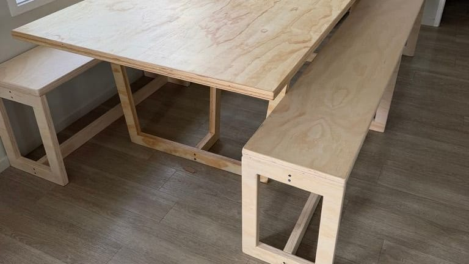
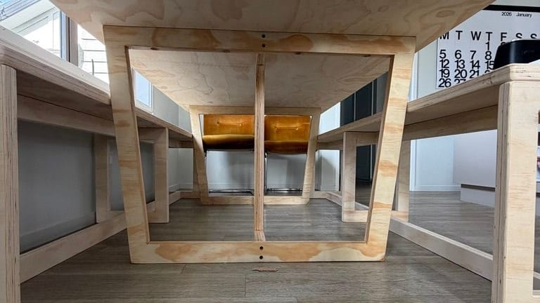
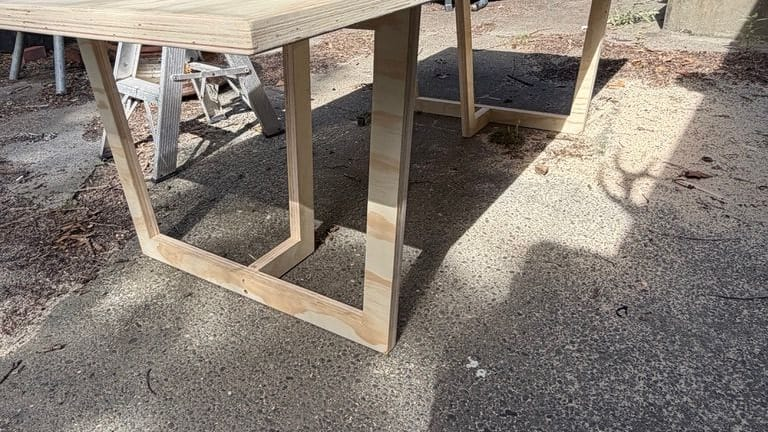
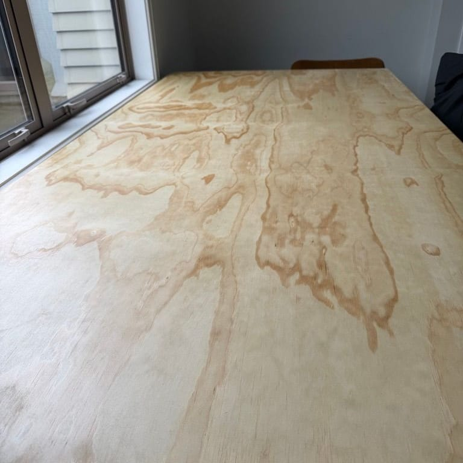
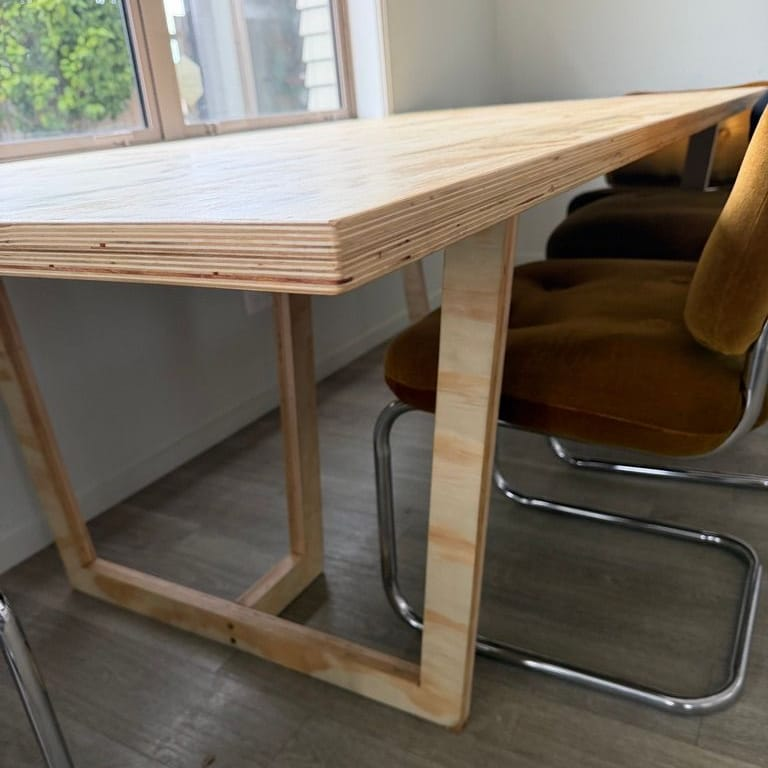

ply table
Designed and crafted to host the masses, this plywood table is both durable and aesthetic. Its 38mm profile makes it feel weighty to the touch giving it a robust feel, yet the scale and length makes it appear light and perfect for seating large crowds. Keeping its natural finish, it is coated in a polyurethane so it can withstand bumps and scrapes. Heavy damage can be sanded back and recoated easily with no difference to its appearance.
- year
- 2026
- materials
- 19mm Radiata Plywood
- price
- $800


About
Short note about the project goes here.
- 36mm Radiata Ply Tabletop, (2 x 18mm ply, laminated)
- Solid-cut legs, same material
- Bracing, same material


Benches
Short note about the benches goes here.
- Bench top
- End frames
- Rail





